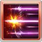

自己隨著自己裝備的刀的數量獲得強化效果
•1把:攻擊+30%(個別乘算/久遠類)
•2把:防禦+50%
•3把:奧義值上升量+20%
•4把:奧義傷害+50%/奧義上限+30%
•5把:傷害上限+20%
•隨著C數增加效果量
•2C:10%
•3C:15%
•4C:30%
•4C以上:35%
#自己在後排時也能發動
シオン
基本資訊
| 定位 | 攻擊 |
| 得意武器 | 刀 |
| 種族 | 人類 |
| CV | 石上静香 |
立繪
上限解放前||上限解放後奧義
| 夜桜散花 | |
| 火屬性4.5倍傷害 自己所有技能CD-2 •隨著自己隊伍中刀得意的角色數量追加1倍火屬性技能傷害(最多6次) |
主動技能
CD:7 |
茶柱繚乱 |
| 敵方單體4倍火屬性傷害 敵方單體攻防-10%(累積最多40%)，持續180秒 自己DA+15%(累積/最多60%) 自己TA+5%(累積/最多20%) |
|
|  CD:12 |
天麩羅閃 |
| 敵方單體3倍火屬性傷害 自己奧義值+20% •隨著自己隊伍中刀得意的角色數量增加發動次數(最多6次) |
|
CD:9 |
寿司三昧 |
| 敵方單體4倍火屬性傷害 自己必TA(2T) 消耗50%奧義時，自己追加2動效果(2T) |
被動技能
|
ボンサイ流 |
| 奧義最大值為200% 自己隨著自己裝備的刀的數量獲得強化效果 •1把:攻擊+30%(個別乘算/久遠類) •2把:防禦+50% •3把:奧義值上升量+20% •4把:奧義傷害+50%/奧義上限+30% •5把:傷害上限+20% |
|
|
追憶の郷里 |
| CB發生時，我方全體火屬性攻擊上升(3T) •隨著C數增加效果量 •2C:10% •3C:15% •4C:30% •4C以上:35% #自己在後排時也能發動 |